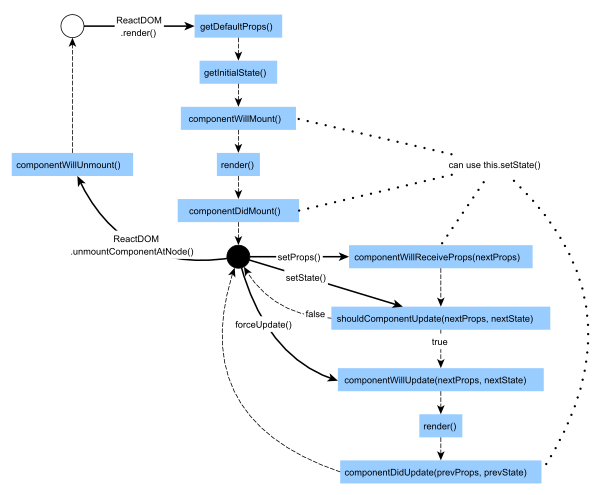
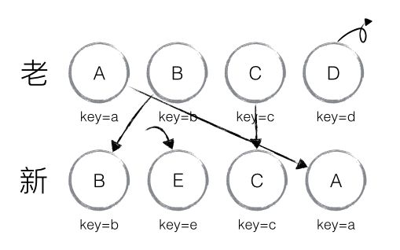
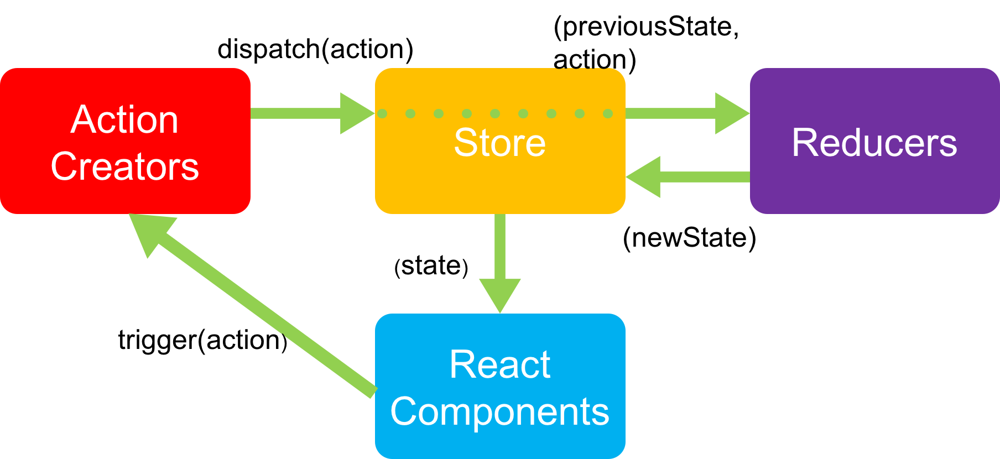

<!DOCTYPE html>


  


<html class="theme-next pisces use-motion" lang="zh-Hans">
<head>
  <meta charset="UTF-8"/>
<meta http-equiv="X-UA-Compatible" content="IE=edge" />
<meta name="viewport" content="width=device-width, initial-scale=1, maximum-scale=1"/>
<meta name="theme-color" content="#222">


  
  
    
    
  <script src="/lib/pace/pace.min.js?v=1.0.2"></script>
  <link href="/lib/pace/pace-theme-bounce.min.css?v=1.0.2" rel="stylesheet">


<meta http-equiv="Cache-Control" content="no-transform" />
<meta http-equiv="Cache-Control" content="no-siteapp" />


  
  
  <link href="/lib/fancybox/source/jquery.fancybox.css?v=2.1.5" rel="stylesheet" type="text/css" />


  
  
  
  

  
    
    
  

  

  

  
    
      
    

    
  

  

  
    
    
    <link href="//fonts.googleapis.com/css?family=Lato:300,300italic,400,400italic,700,700italic|Damion:300,300italic,400,400italic,700,700italic&subset=latin,latin-ext" rel="stylesheet" type="text/css">
  


<link href="/lib/font-awesome/css/font-awesome.min.css?v=4.6.2" rel="stylesheet" type="text/css" />

<link href="/css/main.css?v=5.1.3" rel="stylesheet" type="text/css" />


  <link rel="icon" type="image/png" sizes="32x32" href="/images/favicon.ico?v=5.1.3">


  <meta name="keywords" content="React,Redux," />


  <link rel="alternate" href="/atom.xml" title="DNA' Blog" type="application/atom+xml" />


<meta name="description" content="最近的实习过程中，学习了React+Redux，并使用React+Redux参与了一个完整项目的开发。这里对React和Redux中的关键概念做一下总结，并从实际使用感受上，与我个人熟悉的vue做一个简单的对比。 ReactReact是由facebook发布和维护的前端MVVM框架。 React中的几个概念 React Element（元素）  React Element是React的vi">
<meta name="keywords" content="React,Redux">
<meta property="og:type" content="article">
<meta property="og:title" content="React+Redux学习笔记">
<meta property="og:url" content="http://ssdna.github.io/2018/08/11/a-note-of-learning-react/index.html">
<meta property="og:site_name" content="DNA&#39; Blog">
<meta property="og:description" content="最近的实习过程中，学习了React+Redux，并使用React+Redux参与了一个完整项目的开发。这里对React和Redux中的关键概念做一下总结，并从实际使用感受上，与我个人熟悉的vue做一个简单的对比。 ReactReact是由facebook发布和维护的前端MVVM框架。 React中的几个概念 React Element（元素）  React Element是React的vi">
<meta property="og:locale" content="zh-Hans">
<meta property="og:image" content="http://ssdna.github.io/2018/08/11/a-note-of-learning-react/react-lifecycle.png">
<meta property="og:image" content="http://ssdna.github.io/2018/08/11/a-note-of-learning-react/react-diff-algorithm-depth.jpg">
<meta property="og:image" content="http://ssdna.github.io/2018/08/11/a-note-of-learning-react/react-diff-algorithm-keys.jpg">
<meta property="og:image" content="http://ssdna.github.io/2018/08/11/a-note-of-learning-react/flux.png">
<meta property="og:image" content="http://ssdna.github.io/2018/08/11/a-note-of-learning-react/flux-react-unidirectional-data-flow-diagram.png">
<meta property="og:image" content="http://ssdna.github.io/2018/08/11/a-note-of-learning-react/redux-diagram.png">
<meta property="og:image" content="http://ssdna.github.io/2018/08/11/a-note-of-learning-react/react-lifecycle.png">
<meta property="og:image" content="http://ssdna.github.io/2018/08/11/a-note-of-learning-react/vue-lifecycle.png">
<meta property="og:updated_time" content="2018-08-12T05:11:06.516Z">
<meta name="twitter:card" content="summary">
<meta name="twitter:title" content="React+Redux学习笔记">
<meta name="twitter:description" content="最近的实习过程中，学习了React+Redux，并使用React+Redux参与了一个完整项目的开发。这里对React和Redux中的关键概念做一下总结，并从实际使用感受上，与我个人熟悉的vue做一个简单的对比。 ReactReact是由facebook发布和维护的前端MVVM框架。 React中的几个概念 React Element（元素）  React Element是React的vi">
<meta name="twitter:image" content="http://ssdna.github.io/2018/08/11/a-note-of-learning-react/react-lifecycle.png">


<script type="text/javascript" id="hexo.configurations">
  var NexT = window.NexT || {};
  var CONFIG = {
    root: '/',
    scheme: 'Pisces',
    version: '5.1.3',
    sidebar: {"position":"left","display":"post","offset":12,"b2t":true,"scrollpercent":true,"onmobile":false},
    fancybox: true,
    tabs: true,
    motion: {"enable":true,"async":true,"transition":{"post_block":"fadeIn","post_header":"slideDownIn","post_body":"perspectiveLeftIn","coll_header":"slideLeftIn","sidebar":"slideUpIn"}},
    duoshuo: {
      userId: '6306258619478312000',
      author: '博主大人'
    },
    algolia: {
      applicationID: '',
      apiKey: '',
      indexName: '',
      hits: {"per_page":10},
      labels: {"input_placeholder":"Search for Posts","hits_empty":"We didn't find any results for the search: ${query}","hits_stats":"${hits} results found in ${time} ms"}
    }
  };
</script>


  <link rel="canonical" href="http://ssdna.github.io/2018/08/11/a-note-of-learning-react/"/>


  <title>React+Redux学习笔记 | DNA' Blog</title>
  


</head>

<body itemscope itemtype="http://schema.org/WebPage" lang="zh-Hans">

  
  
    
  

  <div class="container sidebar-position-left page-post-detail">
    <div class="headband"></div>

    <header id="header" class="header" itemscope itemtype="http://schema.org/WPHeader">
      <div class="header-inner"><div class="site-brand-wrapper">
  <div class="site-meta ">
    

    <div class="custom-logo-site-title">
      <a href="/"  class="brand" rel="start">
        <span class="logo-line-before"><i></i></span>
        <span class="site-title">DNA' Blog</span>
        <span class="logo-line-after"><i></i></span>
      </a>
    </div>
      
        <h1 class="site-subtitle" itemprop="description">个人学习记录</h1>
      
  </div>

  <div class="site-nav-toggle">
    <button>
      <span class="btn-bar"></span>
      <span class="btn-bar"></span>
      <span class="btn-bar"></span>
    </button>
  </div>
</div>

<nav class="site-nav">
  

  
    <ul id="menu" class="menu">
      
        
        <li class="menu-item menu-item-home">
          <a href="/" rel="section">
            
              <i class="menu-item-icon fa fa-fw fa-home"></i> <br />
            
            首页
          </a>
        </li>
      
        
        <li class="menu-item menu-item-tags">
          <a href="/tags/" rel="section">
            
              <i class="menu-item-icon fa fa-fw fa-tags"></i> <br />
            
            标签
          </a>
        </li>
      
        
        <li class="menu-item menu-item-categories">
          <a href="/categories/" rel="section">
            
              <i class="menu-item-icon fa fa-fw fa-th"></i> <br />
            
            分类
          </a>
        </li>
      
        
        <li class="menu-item menu-item-archives">
          <a href="/archives/" rel="section">
            
              <i class="menu-item-icon fa fa-fw fa-archive"></i> <br />
            
            归档
          </a>
        </li>
      
        
        <li class="menu-item menu-item-about">
          <a href="/about/" rel="section">
            
              <i class="menu-item-icon fa fa-fw fa-user"></i> <br />
            
            关于
          </a>
        </li>
      

      
        <li class="menu-item menu-item-search">
          
            <a href="javascript:;" class="popup-trigger">
          
            
              <i class="menu-item-icon fa fa-search fa-fw"></i> <br />
            
            搜索
          </a>
        </li>
      
    </ul>
  

  
    <div class="site-search">
      
  <div class="popup search-popup local-search-popup">
  <div class="local-search-header clearfix">
    <span class="search-icon">
      <i class="fa fa-search"></i>
    </span>
    <span class="popup-btn-close">
      <i class="fa fa-times-circle"></i>
    </span>
    <div class="local-search-input-wrapper">
      <input autocomplete="off"
             placeholder="搜索..." spellcheck="false"
             type="text" id="local-search-input">
    </div>
  </div>
  <div id="local-search-result"></div>
</div>


    </div>
  
</nav>


 </div>
    </header>

    <main id="main" class="main">
      <div class="main-inner">
        <div class="content-wrap">
          <div id="content" class="content">
            

  <div id="posts" class="posts-expand">
    

  

  
  
  

  <article class="post post-type-normal" itemscope itemtype="http://schema.org/Article">
  
  
  
  <div class="post-block">
    <link itemprop="mainEntityOfPage" href="http://ssdna.github.io/2018/08/11/a-note-of-learning-react/">

    <span hidden itemprop="author" itemscope itemtype="http://schema.org/Person">
      <meta itemprop="name" content="DNA">
      <meta itemprop="description" content="">
      <meta itemprop="image" content="/images/favicon.ico">
    </span>

    <span hidden itemprop="publisher" itemscope itemtype="http://schema.org/Organization">
      <meta itemprop="name" content="DNA' Blog">
    </span>

    
      <header class="post-header">

        
        
          <h2 class="post-title" itemprop="name headline">React+Redux学习笔记</h2>
        

        <div class="post-meta">
          <span class="post-time">
            
              <span class="post-meta-item-icon">
                <i class="fa fa-calendar-o"></i>
              </span>
              
                <span class="post-meta-item-text">发表于</span>
              
              <time title="创建于" itemprop="dateCreated datePublished" datetime="2018-08-11T19:16:09+08:00">
                2018-08-11
              </time>
            

            
              <span class="post-meta-divider">|</span>
            

            
              <span class="post-meta-item-icon">
                <i class="fa fa-calendar-check-o"></i>
              </span>
              
                <span class="post-meta-item-text">更新于&#58;</span>
              
              <time title="更新于" itemprop="dateModified" datetime="2018-08-12T13:11:06+08:00">
                2018-08-12
              </time>
            
          </span>

          
            <span class="post-category" >
            
              <span class="post-meta-divider">|</span>
            
              <span class="post-meta-item-icon">
                <i class="fa fa-folder-o"></i>
              </span>
              
                <span class="post-meta-item-text">分类于</span>
              
              
                <span itemprop="about" itemscope itemtype="http://schema.org/Thing">
                  <a href="/categories/React/" itemprop="url" rel="index">
                    <span itemprop="name">React</span>
                  </a>
                </span>

                
                
              
            </span>
          

          
            
          

          
          

          
            <span class="post-meta-divider">|</span>
            <span class="page-pv"><i class="fa fa-eye"></i>
            <span class="busuanzi-value" id="busuanzi_value_page_pv" ></span>
            </span>
          

          
            <div class="post-wordcount">
              
                
                <span class="post-meta-item-icon">
                  <i class="fa fa-file-word-o"></i>
                </span>
                
                  <span class="post-meta-item-text">字数统计&#58;</span>
                
                <span title="字数统计">
                  3,354
                </span>
              

              
                <span class="post-meta-divider">|</span>
              

              
                <span class="post-meta-item-icon">
                  <i class="fa fa-clock-o"></i>
                </span>
                
                  <span class="post-meta-item-text">阅读时长 &asymp;</span>
                
                <span title="阅读时长">
                  13
                </span>
              
            </div>
          

          

        </div>
      </header>
    

    
    
    
    <div class="post-body" itemprop="articleBody">

      
      

      
        <p>最近的实习过程中，学习了React+Redux，并使用React+Redux参与了一个完整项目的开发。这里对React和Redux中的关键概念做一下总结，并从实际使用感受上，与我个人熟悉的vue做一个简单的对比。</p>
<h3 id="React"><a href="#React" class="headerlink" title="React"></a>React</h3><p>React是由facebook发布和维护的前端MVVM框架。</p>
<h4 id="React中的几个概念"><a href="#React中的几个概念" class="headerlink" title="React中的几个概念"></a>React中的几个概念</h4><ul>
<li><p>React Element（元素）</p>
<ul>
<li>React Element是React的virtual DOM，本质上就是一个普通的对象，相较于浏览器的DOM更加轻量，它是Component的组成部分，是构建React应用的最小单元。</li>
<li>React Element通常由render函数返回的JSX创建，但其本质上只是React.createElement(component, props, …children)的语法糖。</li>
<li>React Element有类型之分，比如JSX 的标签名就决定了 React Element的类型，不同的JSX标签，就是不同类型的React Element。</li>
<li>React Element有内容（children）和属性（attribute），但是一旦React Element被创建之后，是无法改变其内容或属性的。即，React Element都是immutable 不可变的。</li>
<li>更新界面的唯一办法是创建一个新的React Element，会由React DOM对比（diff）新旧React Element之后，只把改变了的部分更新到浏览器DOM上。</li>
</ul>
<p>React Element 示例：</p>
<figure class="highlight js"><table><tr><td class="gutter"><pre><div class="line">1</div><div class="line">2</div><div class="line">3</div><div class="line">4</div><div class="line">5</div><div class="line">6</div><div class="line">7</div><div class="line">8</div><div class="line">9</div><div class="line">10</div><div class="line">11</div><div class="line">12</div><div class="line">13</div><div class="line">14</div><div class="line">15</div><div class="line">16</div><div class="line">17</div><div class="line">18</div><div class="line">19</div><div class="line">20</div><div class="line">21</div></pre></td><td class="code"><pre><div class="line"><span class="comment">// JSX</span></div><div class="line">&lt;h1 className=<span class="string">"title"</span>&gt;Hello, world!&lt;/h1&gt;</div><div class="line"><span class="comment">// JSX compile to</span></div><div class="line">React.createElement(</div><div class="line">  <span class="string">"h1"</span>,</div><div class="line">  &#123;<span class="attr">className</span>: <span class="string">'title'</span>&#125;,</div><div class="line">  <span class="string">'Hello, world!'</span></div><div class="line">)</div><div class="line"><span class="comment">// React Element</span></div><div class="line"><span class="built_in">Object</span> &#123;</div><div class="line">  $$<span class="keyword">typeof</span>: <span class="built_in">Symbol</span>(react.element),</div><div class="line">  key: <span class="literal">null</span>,</div><div class="line">  props: <span class="built_in">Object</span> &#123;</div><div class="line">    children: <span class="string">"Hello, world!"</span>,</div><div class="line">    className: <span class="string">"title"</span></div><div class="line">  &#125;,</div><div class="line">  ref: <span class="literal">null</span>,</div><div class="line">  type: <span class="string">"h1"</span>,</div><div class="line">  _owner: <span class="literal">null</span>,</div><div class="line">  _store: <span class="built_in">Object</span> &#123;&#125;</div><div class="line">&#125;</div></pre></td></tr></table></figure>
</li>
<li><p>Components（组件）</p>
<p>React的主要特征就是由Components组成。Components可以将UI切分成一些的独立的、可复用的部件，这样你就只需专注于构建每一个单独的部件。<br>所有的React组件必须像纯函数那样使用它们的props。</p>
<ul>
<li>Functional &amp;&amp; Class Component</li>
</ul>
<p>Functional Component 函数定义的组件需要是一个函数，接收单一的props对象作为参数，然后返回一个React Element。</p>
<p>Class Component 使用ES6语法定义的组件，必须继承自React.Component（或PureComponent），实现render函数并返回React Element。Class Component可以有自己的state，用来实现局部状态（或封装）。</p>
<p>Class Component有自身的生命周期钩子。组件的生命周期总体上可分成四个状态：</p>
<ol>
<li><p>Mounting：组件创建并插入DOM</p>
<figure class="highlight plain"><table><tr><td class="gutter"><pre><div class="line">1</div><div class="line">2</div><div class="line">3</div><div class="line">4</div><div class="line">5</div><div class="line">6</div><div class="line">7</div></pre></td><td class="code"><pre><div class="line">constructor()</div><div class="line">static getDerivedStateFromProps()</div><div class="line">render()</div><div class="line">componentDidMount()</div><div class="line"></div><div class="line">// 以下不推荐使用</div><div class="line">UNSAFE_componentWillMount()</div></pre></td></tr></table></figure>
</li>
<li><p>Updating：props/state改变，造成update，进而re-render</p>
<figure class="highlight plain"><table><tr><td class="gutter"><pre><div class="line">1</div><div class="line">2</div><div class="line">3</div><div class="line">4</div><div class="line">5</div><div class="line">6</div><div class="line">7</div><div class="line">8</div><div class="line">9</div></pre></td><td class="code"><pre><div class="line">static getDerivedStateFromProps()</div><div class="line">shouldComponentUpdate()</div><div class="line">render()</div><div class="line">getSnapshotBeforeUpdate()</div><div class="line">componentDidUpdate()</div><div class="line"></div><div class="line">// 以下不推荐使用</div><div class="line">UNSAFE_componentWillUpdate()</div><div class="line">UNSAFE_componentWillReceiveProps()</div></pre></td></tr></table></figure>
</li>
<li><p>Unmounting：移出 DOM</p>
<figure class="highlight plain"><table><tr><td class="gutter"><pre><div class="line">1</div></pre></td><td class="code"><pre><div class="line">componentWillUnmount()</div></pre></td></tr></table></figure>
</li>
<li><p>Error Handling：渲染、生命周期方法、子组件constructor中的错误处理</p>
<figure class="highlight plain"><table><tr><td class="gutter"><pre><div class="line">1</div></pre></td><td class="code"><pre><div class="line">componentDidCatch()()</div></pre></td></tr></table></figure>
</li>
</ol>
<figure class="highlight js"><table><tr><td class="gutter"><pre><div class="line">1</div><div class="line">2</div><div class="line">3</div><div class="line">4</div><div class="line">5</div><div class="line">6</div><div class="line">7</div><div class="line">8</div><div class="line">9</div><div class="line">10</div><div class="line">11</div><div class="line">12</div><div class="line">13</div><div class="line">14</div></pre></td><td class="code"><pre><div class="line"><span class="comment">// Functional Component</span></div><div class="line"><span class="function"><span class="keyword">function</span> <span class="title">Welcome</span>(<span class="params">props</span>) </span>&#123;</div><div class="line">  <span class="keyword">return</span> &lt;h1&gt;Hello, &#123;props.name&#125;&lt;/h1&gt;;</div><div class="line">&#125;</div><div class="line"><span class="comment">// Class Component</span></div><div class="line"><span class="class"><span class="keyword">class</span> <span class="title">Welcome</span> <span class="keyword">extends</span> <span class="title">React</span>.<span class="title">Component</span> </span>&#123;</div><div class="line">  <span class="keyword">constructor</span>(props) &#123;</div><div class="line">    <span class="keyword">super</span>(props);</div><div class="line">    <span class="keyword">this</span>.state = &#123;<span class="attr">date</span>: <span class="keyword">new</span> <span class="built_in">Date</span>()&#125;;</div><div class="line">  &#125;</div><div class="line">  render() &#123;</div><div class="line">    <span class="keyword">return</span> &lt;h1&gt;Hello, &#123;this.props.name&#125;&lt;/h1&gt;;</div><div class="line">  &#125;</div><div class="line">&#125;</div></pre></td></tr></table></figure>
<p> 详细可查看官方文档<a href="https://reactjs.org/docs/react-component.html#lifecycle-methods" target="_blank" rel="external">React.Component API</a>。</p>
<p></p>
</li>
</ul>
<ul>
<li><p>Controlled Components &amp;&amp; Uncontrolled Components</p>
<p>Controlled Components受控组件通常用来实现表单（但并不是唯一的方式）。它有着可变的state，但state只能通过setState方法来更新，并且每个状态的改变都有一个与之相关的处理函数，这样就可以直接修改或验证用户输入。实现起来相对复杂。</p>
<p>Uncontrolled Components非受控组件也可以用来实现表单，它可以使用ref从DOM中直接获取表单项的值，而不是为每个状态更新编写事件处理程序。实现方式更为简单。</p>
</li>
<li><p>Pure Components &amp;&amp; Components</p>
<p>Pure Components相对于Components有着更好的性能，源于它在对state和props的变化进行判断时，只做“浅比较（shallow comparison）”。也就是说原地对数组元素或对象属性的修改，而非生成新元素或对象，是无法触发Pure Components的更新行为的，可以使用Immutable.js来解决这个问题。</p>
<p>Components也可以重写shouldComponentUpdate方法，来阻止Components更新。</p>
</li>
</ul>
<h4 id="Props-VS-State"><a href="#Props-VS-State" class="headerlink" title="Props VS State"></a>Props VS State</h4><p>Props和State变化的时候，都有可能会触发Components的更新，进而re-render,这取决于shouldComponentUpdate方法的返回值。其区别在于：</p>
<ul>
<li>Props是组件外部传递进来的数据，是组件的输入；而State仅属于该组件自身，是组件的状态。</li>
<li>对于组件而言，Props是不可变的，只能由外层组件或Redux等来改变（输入），而State仅可以通过组件自身的setState方法来改变。</li>
<li>State的变化如果想通知到外部组件，需要借助于“事件”，将state作为参数传递出去。</li>
</ul>
<h4 id="HOC高阶组件"><a href="#HOC高阶组件" class="headerlink" title="HOC高阶组件"></a>HOC高阶组件</h4><p>高阶组件本质上就是一个没有副作用的纯函数，且该函数接受一个组件作为参数，并返回一个新的组件。高阶组件是通过将原组件 包裹（wrapping） 在容器组件（container component）里面的方式来 组合（composes） 使用原组件。</p>
<p>高阶组件和 容器组件（container component）的相似之处。容器组件是专注于在高层次和低层次关注点之间进行责任划分的策略的一部分。容器组件会处理诸如数据订阅和状态管理等事情，并传递props属性给展示组件。而展示组件则负责处理渲染UI等事情。高阶组件使用容器组件作为实现的一部分。你也可以认为高阶组件就是参数化的容器组件定义。</p>
<h4 id="React中的diff算法"><a href="#React中的diff算法" class="headerlink" title="React中的diff算法"></a>React中的diff算法</h4><p>在React中，Component的render函数返回的是React Elements(tree)。由于React Element的不可变性，在下一个state或props更新的时候，render函数会返回一个新的React Elements(tree)。React需要对这两个tree做比对(diff)，求出最小的更新操作过程，用来高效的更新DOM。</p>
<p>求解将一棵树转换成另一棵树的最小操作数的算法，<a href="https://grfia.dlsi.ua.es/ml/algorithms/references/editsurvey_bille.pdf" target="_blank" rel="external">最优算法</a>的时间复杂度为o(n^3)。React中对React Elements的diff算法做了简化，将时间复杂度降到了o(n)，极大得提升了性能。该算法的简化基于两点假设：</p>
<ol>
<li>两个不同类型的元素将产生不同的树。</li>
<li>通过渲染器附带key属性，开发者可以示意哪些子元素可能是稳定的。</li>
</ol>
<p>上述假设适用于大部分场景，但并不是所有的情况。所以React中的diff算法，求出的并不是最优解，而是较优解，它在特定的场景下会降低性能。</p>
<p></p>
<p>React中的diff算法是分层（depth）进行的，具体如下：</p>
<p>  当对比两棵React Elements tree时，React会从两棵树的根元素（节点）开始，进行比对。针对同一层级节点的具体比对方式如下：</p>
<ol>
<li>针对不同类型的元素<br>React会销毁该元素及其所有的子元素，并重新构建新的元素及其所有的子元素；<ul>
<li>DOM元素：直接销毁并重建；</li>
<li>Component元素：销毁前，该Component实例会收到componentWillUnmount()；重建时，新Component实例会收到componentWillMount() 和 componentDidMount()，这会导致该Component的state丢失。</li>
</ul>
</li>
<li>针对相同类型的元素<ul>
<li>DOM元素：例如div、h1等，React会比较两者的属性，仅更新变化的属性，并递归其子元素；</li>
<li>Component元素：会保留该Component的实例，并在该实例上依次调用componentWillReceiveProps() 和 componentWillUpdate() 方法，该Component的state会保留。在组件元素的render方法被调用的时候，diff算法会继续以该Component的根元素递归处理；</li>
</ul>
</li>
<li>在递归子节点（React Element children）<ul>
<li>没key：默认情况下，React会从前到后逐个按照上述方式对children的各个项进行比对，根据其元素类型做不同的改变（创建、销毁、更改）。此方法效率低下，并且在特定情况下可能会导致大量元素的销毁和重建，无法保持组件的实例及其状态；</li>
<li>有key：为了提高效率并保证稳定性，可以给所有的children加“key”。该key值需要在同一兄弟元素之间应该是独一无二的，这样就能快速地通过该key值做对比，本质上是一种hash的思想。</li>
</ul>
</li>
</ol>
<p></p>
<p>由于React diff算法对子节点（children）的对比方式的特殊性，在进行 类似将最后一个节点移动到列表首部的操作时，在一定程度上会影响 React 的渲染性能，尤其是在节点数量过大或更新操作过于频繁时。</p>
<h4 id="其他知识点"><a href="#其他知识点" class="headerlink" title="其他知识点"></a>其他知识点</h4><ul>
<li>自React v15.5后，需要使用prop-types来对props做类型检查；</li>
<li>与第三方库协同时，如涉及到DOM操作，可以使用ref；</li>
<li>跨父子组件传递props，可以使用Context，借助Provider和Consumer实现；</li>
<li>如果不想在DOM中增加额外的节点，可以使用Fragments；</li>
<li>如果需要将子节点渲染到父组件以外的 DOM 节点，可以使用Portals。此时Virtual DOM（React Elements）的层级会仍然保留（主要体现在事件冒泡上）；</li>
<li>React有自身的SyntheticEvent（合成事件），其接口和行为与原生事件的保持一致，是跨浏览器的一层封装。</li>
</ul>
<p>参考文章：</p>
<ul>
<li><a href="https://zhuanlan.zhihu.com/p/20346379" target="_blank" rel="external">React 源码剖析系列 － 不可思议的 react diff</a></li>
</ul>
<h3 id="Redux"><a href="#Redux" class="headerlink" title="Redux"></a>Redux</h3><p>Redux 是 JavaScript 状态容器，提供可预测化的状态管理。Redux 由 Flux 演变而来，但受 Elm 的启发，避开了 Flux 的复杂性。</p>
<p><br></p>
<p>React与flux区别在于：</p>
<ul>
<li>Redux 并没有 dispatcher 的概念；</li>
<li>Redux 假设数据是不可变的；</li>
</ul>
<p>React是严格的单向数据流。</p>
<h4 id="Redux的三大原则"><a href="#Redux的三大原则" class="headerlink" title="Redux的三大原则"></a>Redux的三大原则</h4><ol>
<li>单一数据源；</li>
<li>State 是只读的；</li>
<li>使用纯函数来执行修改。</li>
</ol>
<p></p>
<h4 id="基础"><a href="#基础" class="headerlink" title="基础"></a>基础</h4><ul>
<li>Action 本质上是一个对象，由Action Creator产生，可以通过<code>store.dispatch(action)</code>传递到store；</li>
<li>Reducers 本质上是一个纯函数，接收旧的 state 和 action，返回新的 state；</li>
<li>Store 本质上是一个对象，用来保存应用的状态；</li>
</ul>
<p>Reducers指定了应用状态的变化如何响应 actions 并发送到 store 的，actions 只是描述了有事情发生了这一事实，并没有描述应用如何更新 state。</p>
<p>Redux 应用中数据的生命周期遵循下面 4 个步骤：</p>
<ol>
<li>调用 store.dispatch(action)；</li>
<li>Redux store 调用传入的 reducer 函数；</li>
<li>根 reducer 应该把多个子 reducer 输出合并成一个单一的 state 树；</li>
<li>Redux store 保存了根 reducer 返回的完整 state 树；</li>
</ol>
<h4 id="高级"><a href="#高级" class="headerlink" title="高级"></a>高级</h4><ul>
<li>异步Action</li>
</ul>
<p>处理异步Action，需要dispatch 至少三种 action：</p>
<ol>
<li>一种通知 reducer 异步Action开始的 action；</li>
<li>一种通知 reducer 异步Action成功的 action；</li>
<li>一种通知 reducer 异步Action失败的 action；</li>
</ol>
<p>React处理异步Action，通常会使用middleware。常用的有redux-thunk、redux-saga、redux-promise、redux-observable、<br>redux-pack等</p>
<ul>
<li>异步数据流</li>
</ul>
<p>默认情况下，createStore() 所创建的 Redux store 没有使用 middleware，所以只支持 同步数据流。</p>
<p>当使用了middleware时，middleware 链中的最后一个 middleware 开始 dispatch action，这个 action 必须是一个普通对象，middleware 链之前可以根据 middleware 对 dispatch 的封装，来 dispatch 一些除了 action 以外的其他内容，例如：函数或者 Promise。从而实现了异步数据流。</p>
<ul>
<li>Middleware</li>
</ul>
<p>Redux middleware可以用来链式组合，它提供的是位于 action 被发起之后，到达 reducer 之前的扩展点。 你可以利用 Redux middleware 来进行日志记录、创建崩溃报告、调用异步接口或者路由等等。</p>
<h3 id="React-vs-Vue-简单对比"><a href="#React-vs-Vue-简单对比" class="headerlink" title="React vs Vue 简单对比"></a>React vs Vue 简单对比</h3><p>React和Vue都是现如今非常流行的前端MVVM框架。其中Vue的渐进式，更适合于中小型项目，React在大型项目有比Vue更严格的规则，在大型项目中表现更为出色。</p>
<h4 id="JSX-vs-Template"><a href="#JSX-vs-Template" class="headerlink" title="JSX vs Template"></a>JSX vs Template</h4><p>在视图层面，React中通常会使用JSX，而Vue可以使用模板（Template）或render函数，但其本质上都是用来生成Virtual DOM的函数。JSX会被编译为React.createElement(），而Vue中的template会被编译为render函数。</p>
<p>JSX很强大，中间可以在<code>{}</code>内部使用任意JS代码。Vue中的template语法上近似原生HTML，上手难度极低，很多特性的写法上非常灵活，同时还提供了强大的render函数，很多复杂的组件，可以直接用render函数来实现。</p>
<h4 id="单向数据流"><a href="#单向数据流" class="headerlink" title="单向数据流"></a>单向数据流</h4><p>React中是严格的单向数据流，组件要想将自身的state反馈回去，需要借助于“事件”（受控组件）。而Vue中也是单向数据流，虽然可以通过v-model实现双向绑定的，但其本质上只是onchange事件的语法糖。</p>
<h4 id="组件间通信"><a href="#组件间通信" class="headerlink" title="组件间通信"></a>组件间通信</h4><ul>
<li>父子组件之间通信，React和Vue是相同的，都是采用“props down， event up”的形式；</li>
<li>祖孙组件（跨层级的组件）之间通信，React需要借助context，Vue是使用message，本质上是一样的；</li>
<li>兄弟组件之间通信，React和Vue都是通过共同祖先组件传递的同一个props实现。</li>
</ul>
<h4 id="生命周期"><a href="#生命周期" class="headerlink" title="生命周期"></a>生命周期</h4><p>React的生命周期示意图<br><br>Vue的生命周期示意图<br></p>
<h3 id="总结"><a href="#总结" class="headerlink" title="总结"></a>总结</h3><p>React有强大的JSX，自定义的diff算法，提倡纯函数，支持服务器端渲染；再加上成熟的生态，丰富的组件库，以及各种周边（Redux、React-Router等），有着非常强的扩展性。结合Webpack等构建工具，可以使得用React开发的项目有着很强的可扩展性和可维护性，工程化得到了极大的保障。</p>
<p>本文只是React新手的学习笔记，是学习React和Redux概念方面的总结。我个人对React的了解仍比较浅，有待从实践中学习，从原理方面思考，并进一步从源码中学习。前方的路还很长，且行且成长。</p>

      
    </div>
    
    
    

    

    

    
      <div>
        <ul class="post-copyright">
  <li class="post-copyright-author">
    <strong>本文作者：</strong>
    DNA
  </li>
  <li class="post-copyright-link">
    <strong>本文链接：</strong>
    <a href="http://ssdna.github.io/2018/08/11/a-note-of-learning-react/" title="React+Redux学习笔记">http://ssdna.github.io/2018/08/11/a-note-of-learning-react/</a>
  </li>
  <li class="post-copyright-license">
    <strong>版权声明： </strong>
    本博客所有文章除特别声明外，均采用 <a href="https://creativecommons.org/licenses/by-nc-sa/3.0/" rel="external nofollow" target="_blank">CC BY-NC-SA 3.0</a> 许可协议。转载请注明出处！
  </li>
</ul>

      </div>
    

    <footer class="post-footer">
      
        <div class="post-tags">
          
            <a href="/tags/React/" rel="tag"># React</a>
          
            <a href="/tags/Redux/" rel="tag"># Redux</a>
          
        </div>
      

      
      
      

      
        <div class="post-nav">
          <div class="post-nav-next post-nav-item">
            
              <a href="/2018/04/21/Front-End-Related-Network-Protocals-Summary/" rel="next" title="Web前端涉及到的相关网络协议概述">
                <i class="fa fa-chevron-left"></i> Web前端涉及到的相关网络协议概述
              </a>
            
          </div>

          <span class="post-nav-divider"></span>

          <div class="post-nav-prev post-nav-item">
            
          </div>
        </div>
      

      
      
    </footer>
  </div>
  
  
  
  </article>


    <div class="post-spread">
      
        
  <div class="bdsharebuttonbox">
    <a href="#" class="bds_tsina" data-cmd="tsina" title="分享到新浪微博"></a>
    <a href="#" class="bds_douban" data-cmd="douban" title="分享到豆瓣网"></a>
    <a href="#" class="bds_sqq" data-cmd="sqq" title="分享到QQ好友"></a>
    <a href="#" class="bds_qzone" data-cmd="qzone" title="分享到QQ空间"></a>
    <a href="#" class="bds_weixin" data-cmd="weixin" title="分享到微信"></a>
    <a href="#" class="bds_tieba" data-cmd="tieba" title="分享到百度贴吧"></a>
    <a href="#" class="bds_twi" data-cmd="twi" title="分享到Twitter"></a>
    <a href="#" class="bds_fbook" data-cmd="fbook" title="分享到Facebook"></a>
    <a href="#" class="bds_more" data-cmd="more"></a>
    <a class="bds_count" data-cmd="count"></a>
  </div>
  <script>
    window._bd_share_config = {
      "common": {
        "bdText": "",
        "bdMini": "2",
        "bdMiniList": false,
        "bdPic": ""
      },
      "share": {
        "bdSize": "16",
        "bdStyle": "0"
      },
      "image": {
        "viewList": ["tsina", "douban", "sqq", "qzone", "weixin", "twi", "fbook"],
        "viewText": "分享到：",
        "viewSize": "16"
      }
    }
  </script>

<script>
  with(document)0[(getElementsByTagName('head')[0]||body).appendChild(createElement('script')).src='//bdimg.share.baidu.com/static/api/js/share.js?cdnversion='+~(-new Date()/36e5)];
</script>

      
    </div>
  </div>


          </div>
          


          
  
    <div onclick="showGitment()" id="gitment_title" class="gitment_title" style="display:none">显示 Gitment 评论</div>
    <div id="gitment_container" class="gitment_container"></div>
    <link rel="stylesheet" href="https://imsun.github.io/gitment/style/default.css">
    <script src="https://imsun.github.io/gitment/dist/gitment.browser.js"></script>
    <script>
    const myTheme = {
      render(state, instance) {
        const container = document.createElement('div');
        container.lang = "en-US";
        container.className = 'gitment-container gitment-root-container';
        container.appendChild(instance.renderHeader(state, instance));
        container.appendChild(instance.renderEditor(state, instance));
        container.appendChild(instance.renderComments(state, instance));
        container.appendChild(instance.renderFooter(state, instance));
        return container;
      }
    }
    function showGitment() {
      // $("#gitment_title").attr("style", "display:none");
      // $("#container").attr("style", "").addClass("gitment_container");
      var gitment = new Gitment({
        id: window.location.pathname,
        theme: myTheme,
        owner: 'ssDNA',
        repo: 'ssdna.github.io',
        oauth: {
          client_id: 'a09612e9d629685e3295',
          client_secret: 'c151e37a3b080ecc745be78b78cee987f8c3424f'
        }
      });
      gitment.render('gitment_container');
    }
    showGitment();
    </script>
  


        </div>
        
          
  
  <div class="sidebar-toggle">
    <div class="sidebar-toggle-line-wrap">
      <span class="sidebar-toggle-line sidebar-toggle-line-first"></span>
      <span class="sidebar-toggle-line sidebar-toggle-line-middle"></span>
      <span class="sidebar-toggle-line sidebar-toggle-line-last"></span>
    </div>
  </div>

  <aside id="sidebar" class="sidebar">
    
    <div class="sidebar-inner">

      

      
        <ul class="sidebar-nav motion-element">
          <li class="sidebar-nav-toc sidebar-nav-active" data-target="post-toc-wrap">
            文章目录
          </li>
          <li class="sidebar-nav-overview" data-target="site-overview-wrap">
            站点概览
          </li>
        </ul>
      

      <section class="site-overview-wrap sidebar-panel">
        <div class="site-overview">
          <div class="site-author motion-element" itemprop="author" itemscope itemtype="http://schema.org/Person">
            
              
            
              <p class="site-author-name" itemprop="name">DNA</p>
              <p class="site-description motion-element" itemprop="description"></p>
          </div>

          <nav class="site-state motion-element">

            
              <div class="site-state-item site-state-posts">
              
                <a href="/archives/">
              
                  <span class="site-state-item-count">12</span>
                  <span class="site-state-item-name">日志</span>
                </a>
              </div>
            

            
              
              
              <div class="site-state-item site-state-categories">
                <a href="/categories/index.html">
                  <span class="site-state-item-count">8</span>
                  <span class="site-state-item-name">分类</span>
                </a>
              </div>
            

            
              
              
              <div class="site-state-item site-state-tags">
                <a href="/tags/index.html">
                  <span class="site-state-item-count">22</span>
                  <span class="site-state-item-name">标签</span>
                </a>
              </div>
            

          </nav>

          
            <div class="feed-link motion-element">
              <a href="/atom.xml" rel="alternate">
                <i class="fa fa-rss"></i>
                RSS
              </a>
            </div>
          

          <div class="links-of-author motion-element">
            
              
                <span class="links-of-author-item">
                  <a href="https://github.com/ssdna" target="_blank" title="GitHub">
                    
                      <i class="fa fa-fw fa-github"></i>GitHub</a>
                </span>
              
                <span class="links-of-author-item">
                  <a href="mailto:wn_1218@163.com" target="_blank" title="E-Mail">
                    
                      <i class="fa fa-fw fa-envelope"></i>E-Mail</a>
                </span>
              
            
          </div>

          
          
            <div class="cc-license motion-element" itemprop="license">
              <a href="https://creativecommons.org/licenses/by-nc-sa/4.0/" class="cc-opacity" target="_blank">
                
              </a>
            </div>
          

          
          
            <div class="links-of-blogroll motion-element links-of-blogroll-inline">
              <div class="links-of-blogroll-title">
                <i class="fa  fa-fw fa-globe"></i>
                友情链接
              </div>
              <ul class="links-of-blogroll-list">
                
                  <li class="links-of-blogroll-item">
                    <a href="http://d4rkd0g.github.io" title="昭哥" target="_blank">昭哥</a>
                  </li>
                
                  <li class="links-of-blogroll-item">
                    <a href="http://danielwan.me" title="六哥" target="_blank">六哥</a>
                  </li>
                
                  <li class="links-of-blogroll-item">
                    <a href="http://xiaqiu2233.github.io" title="媳妇" target="_blank">媳妇</a>
                  </li>
                
              </ul>
            </div>
          

          

        </div>
      </section>

      
      <!--noindex-->
        <section class="post-toc-wrap motion-element sidebar-panel sidebar-panel-active">
          <div class="post-toc">

            
              
            

            
              <div class="post-toc-content"><ol class="nav"><li class="nav-item nav-level-3"><a class="nav-link" href="#React"><span class="nav-number">1.</span> <span class="nav-text">React</span></a><ol class="nav-child"><li class="nav-item nav-level-4"><a class="nav-link" href="#React中的几个概念"><span class="nav-number">1.1.</span> <span class="nav-text">React中的几个概念</span></a></li><li class="nav-item nav-level-4"><a class="nav-link" href="#Props-VS-State"><span class="nav-number">1.2.</span> <span class="nav-text">Props VS State</span></a></li><li class="nav-item nav-level-4"><a class="nav-link" href="#HOC高阶组件"><span class="nav-number">1.3.</span> <span class="nav-text">HOC高阶组件</span></a></li><li class="nav-item nav-level-4"><a class="nav-link" href="#React中的diff算法"><span class="nav-number">1.4.</span> <span class="nav-text">React中的diff算法</span></a></li><li class="nav-item nav-level-4"><a class="nav-link" href="#其他知识点"><span class="nav-number">1.5.</span> <span class="nav-text">其他知识点</span></a></li></ol></li><li class="nav-item nav-level-3"><a class="nav-link" href="#Redux"><span class="nav-number">2.</span> <span class="nav-text">Redux</span></a><ol class="nav-child"><li class="nav-item nav-level-4"><a class="nav-link" href="#Redux的三大原则"><span class="nav-number">2.1.</span> <span class="nav-text">Redux的三大原则</span></a></li><li class="nav-item nav-level-4"><a class="nav-link" href="#基础"><span class="nav-number">2.2.</span> <span class="nav-text">基础</span></a></li><li class="nav-item nav-level-4"><a class="nav-link" href="#高级"><span class="nav-number">2.3.</span> <span class="nav-text">高级</span></a></li></ol></li><li class="nav-item nav-level-3"><a class="nav-link" href="#React-vs-Vue-简单对比"><span class="nav-number">3.</span> <span class="nav-text">React vs Vue 简单对比</span></a><ol class="nav-child"><li class="nav-item nav-level-4"><a class="nav-link" href="#JSX-vs-Template"><span class="nav-number">3.1.</span> <span class="nav-text">JSX vs Template</span></a></li><li class="nav-item nav-level-4"><a class="nav-link" href="#单向数据流"><span class="nav-number">3.2.</span> <span class="nav-text">单向数据流</span></a></li><li class="nav-item nav-level-4"><a class="nav-link" href="#组件间通信"><span class="nav-number">3.3.</span> <span class="nav-text">组件间通信</span></a></li><li class="nav-item nav-level-4"><a class="nav-link" href="#生命周期"><span class="nav-number">3.4.</span> <span class="nav-text">生命周期</span></a></li></ol></li><li class="nav-item nav-level-3"><a class="nav-link" href="#总结"><span class="nav-number">4.</span> <span class="nav-text">总结</span></a></li></ol></div>
            

          </div>
        </section>
      <!--/noindex-->
      

      
        <div class="back-to-top">
          <i class="fa fa-arrow-up"></i>
          
            <span id="scrollpercent"><span>0</span>%</span>
          
        </div>
      

    </div>
  </aside>


        
      </div>
    </main>

    <footer id="footer" class="footer">
      <div class="footer-inner">
        <div class="copyright">&copy; 2016 &mdash; <span itemprop="copyrightYear">2018</span>
  <span class="with-love">
    <i class="fa fa-user"></i>
  </span>
  <span class="author" itemprop="copyrightHolder">DNA</span>

  
    <span class="post-meta-divider">|</span>
    <span class="post-meta-item-icon">
      <i class="fa fa-area-chart"></i>
    </span>
    
      <span class="post-meta-item-text">网站总字数&#58;</span>
    
    <span title="网站总字数">12.2k</span>
  
</div>


  <div class="powered-by">由 <a class="theme-link" target="_blank" href="https://hexo.io">Hexo</a> 强力驱动</div>


  <span class="post-meta-divider">|</span>


  <div class="theme-info">主题 &mdash; <a class="theme-link" target="_blank" href="https://github.com/iissnan/hexo-theme-next">NexT.Pisces</a> v5.1.3</div>


        
<div class="busuanzi-count">
  <script async src="https://dn-lbstatics.qbox.me/busuanzi/2.3/busuanzi.pure.mini.js"></script>

  
    <span class="site-uv">
      <i class="fa fa-user"></i>
      <span class="busuanzi-value" id="busuanzi_value_site_uv"></span>
      
    </span>
  

  
    <span class="site-pv">
      <i class="fa fa-eye"></i>
      <span class="busuanzi-value" id="busuanzi_value_site_pv"></span>
      
    </span>
  
</div>


        
      </div>
    </footer>

    

  </div>

  

<script type="text/javascript">
  if (Object.prototype.toString.call(window.Promise) !== '[object Function]') {
    window.Promise = null;
  }
</script>


  


  
  <script type="text/javascript" src="/lib/jquery/index.js?v=2.1.3"></script>

  
  <script type="text/javascript" src="/lib/fastclick/lib/fastclick.min.js?v=1.0.6"></script>

  
  <script type="text/javascript" src="/lib/jquery_lazyload/jquery.lazyload.js?v=1.9.7"></script>

  
  <script type="text/javascript" src="/lib/velocity/velocity.min.js?v=1.2.1"></script>

  
  <script type="text/javascript" src="/lib/velocity/velocity.ui.min.js?v=1.2.1"></script>

  
  <script type="text/javascript" src="/lib/fancybox/source/jquery.fancybox.pack.js?v=2.1.5"></script>


  


  <script type="text/javascript" src="/js/src/utils.js?v=5.1.3"></script>

  <script type="text/javascript" src="/js/src/motion.js?v=5.1.3"></script>


  
  


  <script type="text/javascript" src="/js/src/affix.js?v=5.1.3"></script>

  <script type="text/javascript" src="/js/src/schemes/pisces.js?v=5.1.3"></script>


  
  <script type="text/javascript" src="/js/src/scrollspy.js?v=5.1.3"></script>
<script type="text/javascript" src="/js/src/post-details.js?v=5.1.3"></script>


  


  <script type="text/javascript" src="/js/src/bootstrap.js?v=5.1.3"></script>


  


  


	


  


  


  

  <script type="text/javascript">
    // Popup Window;
    var isfetched = false;
    var isXml = true;
    // Search DB path;
    var search_path = "search.xml";
    if (search_path.length === 0) {
      search_path = "search.xml";
    } else if (/json$/i.test(search_path)) {
      isXml = false;
    }
    var path = "/" + search_path;
    // monitor main search box;

    var onPopupClose = function (e) {
      $('.popup').hide();
      $('#local-search-input').val('');
      $('.search-result-list').remove();
      $('#no-result').remove();
      $(".local-search-pop-overlay").remove();
      $('body').css('overflow', '');
    }

    function proceedsearch() {
      $("body")
        .append('<div class="search-popup-overlay local-search-pop-overlay"></div>')
        .css('overflow', 'hidden');
      $('.search-popup-overlay').click(onPopupClose);
      $('.popup').toggle();
      var $localSearchInput = $('#local-search-input');
      $localSearchInput.attr("autocapitalize", "none");
      $localSearchInput.attr("autocorrect", "off");
      $localSearchInput.focus();
    }

    // search function;
    var searchFunc = function(path, search_id, content_id) {
      'use strict';

      // start loading animation
      $("body")
        .append('<div class="search-popup-overlay local-search-pop-overlay">' +
          '<div id="search-loading-icon">' +
          '<i class="fa fa-spinner fa-pulse fa-5x fa-fw"></i>' +
          '</div>' +
          '</div>')
        .css('overflow', 'hidden');
      $("#search-loading-icon").css('margin', '20% auto 0 auto').css('text-align', 'center');

      $.ajax({
        url: path,
        dataType: isXml ? "xml" : "json",
        async: true,
        success: function(res) {
          // get the contents from search data
          isfetched = true;
          $('.popup').detach().appendTo('.header-inner');
          var datas = isXml ? $("entry", res).map(function() {
            return {
              title: $("title", this).text(),
              content: $("content",this).text(),
              url: $("url" , this).text()
            };
          }).get() : res;
          var input = document.getElementById(search_id);
          var resultContent = document.getElementById(content_id);
          var inputEventFunction = function() {
            var searchText = input.value.trim().toLowerCase();
            var keywords = searchText.split(/[\s\-]+/);
            if (keywords.length > 1) {
              keywords.push(searchText);
            }
            var resultItems = [];
            if (searchText.length > 0) {
              // perform local searching
              datas.forEach(function(data) {
                var isMatch = false;
                var hitCount = 0;
                var searchTextCount = 0;
                var title = data.title.trim();
                var titleInLowerCase = title.toLowerCase();
                var content = data.content.trim().replace(/<[^>]+>/g,"");
                var contentInLowerCase = content.toLowerCase();
                var articleUrl = decodeURIComponent(data.url);
                var indexOfTitle = [];
                var indexOfContent = [];
                // only match articles with not empty titles
                if(title != '') {
                  keywords.forEach(function(keyword) {
                    function getIndexByWord(word, text, caseSensitive) {
                      var wordLen = word.length;
                      if (wordLen === 0) {
                        return [];
                      }
                      var startPosition = 0, position = [], index = [];
                      if (!caseSensitive) {
                        text = text.toLowerCase();
                        word = word.toLowerCase();
                      }
                      while ((position = text.indexOf(word, startPosition)) > -1) {
                        index.push({position: position, word: word});
                        startPosition = position + wordLen;
                      }
                      return index;
                    }

                    indexOfTitle = indexOfTitle.concat(getIndexByWord(keyword, titleInLowerCase, false));
                    indexOfContent = indexOfContent.concat(getIndexByWord(keyword, contentInLowerCase, false));
                  });
                  if (indexOfTitle.length > 0 || indexOfContent.length > 0) {
                    isMatch = true;
                    hitCount = indexOfTitle.length + indexOfContent.length;
                  }
                }

                // show search results

                if (isMatch) {
                  // sort index by position of keyword

                  [indexOfTitle, indexOfContent].forEach(function (index) {
                    index.sort(function (itemLeft, itemRight) {
                      if (itemRight.position !== itemLeft.position) {
                        return itemRight.position - itemLeft.position;
                      } else {
                        return itemLeft.word.length - itemRight.word.length;
                      }
                    });
                  });

                  // merge hits into slices

                  function mergeIntoSlice(text, start, end, index) {
                    var item = index[index.length - 1];
                    var position = item.position;
                    var word = item.word;
                    var hits = [];
                    var searchTextCountInSlice = 0;
                    while (position + word.length <= end && index.length != 0) {
                      if (word === searchText) {
                        searchTextCountInSlice++;
                      }
                      hits.push({position: position, length: word.length});
                      var wordEnd = position + word.length;

                      // move to next position of hit

                      index.pop();
                      while (index.length != 0) {
                        item = index[index.length - 1];
                        position = item.position;
                        word = item.word;
                        if (wordEnd > position) {
                          index.pop();
                        } else {
                          break;
                        }
                      }
                    }
                    searchTextCount += searchTextCountInSlice;
                    return {
                      hits: hits,
                      start: start,
                      end: end,
                      searchTextCount: searchTextCountInSlice
                    };
                  }

                  var slicesOfTitle = [];
                  if (indexOfTitle.length != 0) {
                    slicesOfTitle.push(mergeIntoSlice(title, 0, title.length, indexOfTitle));
                  }

                  var slicesOfContent = [];
                  while (indexOfContent.length != 0) {
                    var item = indexOfContent[indexOfContent.length - 1];
                    var position = item.position;
                    var word = item.word;
                    // cut out 100 characters
                    var start = position - 20;
                    var end = position + 80;
                    if(start < 0){
                      start = 0;
                    }
                    if (end < position + word.length) {
                      end = position + word.length;
                    }
                    if(end > content.length){
                      end = content.length;
                    }
                    slicesOfContent.push(mergeIntoSlice(content, start, end, indexOfContent));
                  }

                  // sort slices in content by search text's count and hits' count

                  slicesOfContent.sort(function (sliceLeft, sliceRight) {
                    if (sliceLeft.searchTextCount !== sliceRight.searchTextCount) {
                      return sliceRight.searchTextCount - sliceLeft.searchTextCount;
                    } else if (sliceLeft.hits.length !== sliceRight.hits.length) {
                      return sliceRight.hits.length - sliceLeft.hits.length;
                    } else {
                      return sliceLeft.start - sliceRight.start;
                    }
                  });

                  // select top N slices in content

                  var upperBound = parseInt('-1');
                  if (upperBound >= 0) {
                    slicesOfContent = slicesOfContent.slice(0, upperBound);
                  }

                  // highlight title and content

                  function highlightKeyword(text, slice) {
                    var result = '';
                    var prevEnd = slice.start;
                    slice.hits.forEach(function (hit) {
                      result += text.substring(prevEnd, hit.position);
                      var end = hit.position + hit.length;
                      result += '<b class="search-keyword">' + text.substring(hit.position, end) + '</b>';
                      prevEnd = end;
                    });
                    result += text.substring(prevEnd, slice.end);
                    return result;
                  }

                  var resultItem = '';

                  if (slicesOfTitle.length != 0) {
                    resultItem += "<li><a href='" + articleUrl + "' class='search-result-title'>" + highlightKeyword(title, slicesOfTitle[0]) + "</a>";
                  } else {
                    resultItem += "<li><a href='" + articleUrl + "' class='search-result-title'>" + title + "</a>";
                  }

                  slicesOfContent.forEach(function (slice) {
                    resultItem += "<a href='" + articleUrl + "'>" +
                      "<p class=\"search-result\">" + highlightKeyword(content, slice) +
                      "...</p>" + "</a>";
                  });

                  resultItem += "</li>";
                  resultItems.push({
                    item: resultItem,
                    searchTextCount: searchTextCount,
                    hitCount: hitCount,
                    id: resultItems.length
                  });
                }
              })
            };
            if (keywords.length === 1 && keywords[0] === "") {
              resultContent.innerHTML = '<div id="no-result"><i class="fa fa-search fa-5x" /></div>'
            } else if (resultItems.length === 0) {
              resultContent.innerHTML = '<div id="no-result"><i class="fa fa-frown-o fa-5x" /></div>'
            } else {
              resultItems.sort(function (resultLeft, resultRight) {
                if (resultLeft.searchTextCount !== resultRight.searchTextCount) {
                  return resultRight.searchTextCount - resultLeft.searchTextCount;
                } else if (resultLeft.hitCount !== resultRight.hitCount) {
                  return resultRight.hitCount - resultLeft.hitCount;
                } else {
                  return resultRight.id - resultLeft.id;
                }
              });
              var searchResultList = '<ul class=\"search-result-list\">';
              resultItems.forEach(function (result) {
                searchResultList += result.item;
              })
              searchResultList += "</ul>";
              resultContent.innerHTML = searchResultList;
            }
          }

          if ('auto' === 'auto') {
            input.addEventListener('input', inputEventFunction);
          } else {
            $('.search-icon').click(inputEventFunction);
            input.addEventListener('keypress', function (event) {
              if (event.keyCode === 13) {
                inputEventFunction();
              }
            });
          }

          // remove loading animation
          $(".local-search-pop-overlay").remove();
          $('body').css('overflow', '');

          proceedsearch();
        }
      });
    }

    // handle and trigger popup window;
    $('.popup-trigger').click(function(e) {
      e.stopPropagation();
      if (isfetched === false) {
        searchFunc(path, 'local-search-input', 'local-search-result');
      } else {
        proceedsearch();
      };
    });

    $('.popup-btn-close').click(onPopupClose);
    $('.popup').click(function(e){
      e.stopPropagation();
    });
    $(document).on('keyup', function (event) {
      var shouldDismissSearchPopup = event.which === 27 &&
        $('.search-popup').is(':visible');
      if (shouldDismissSearchPopup) {
        onPopupClose();
      }
    });
  </script>


  

  
<script>
(function(){
    var bp = document.createElement('script');
    var curProtocol = window.location.protocol.split(':')[0];
    if (curProtocol === 'https') {
        bp.src = 'https://zz.bdstatic.com/linksubmit/push.js';        
    }
    else {
        bp.src = 'http://push.zhanzhang.baidu.com/push.js';
    }
    var s = document.getElementsByTagName("script")[0];
    s.parentNode.insertBefore(bp, s);
})();
</script>


  

  

  
  <script type="text/javascript" src="/js/src/js.cookie.js?v=5.1.3"></script>
  <script type="text/javascript" src="/js/src/scroll-cookie.js?v=5.1.3"></script>


  

</body>
</html>
